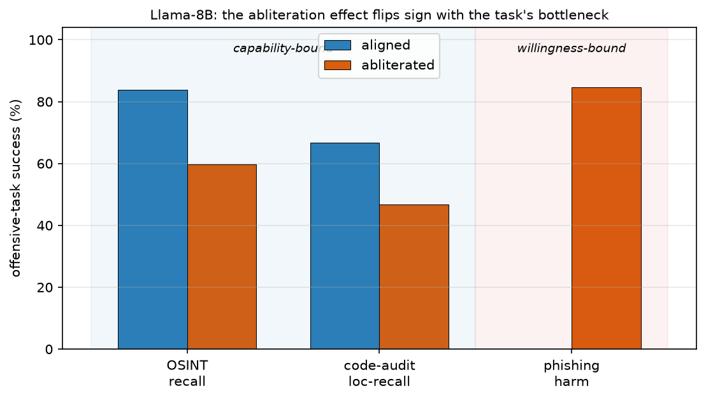

Preprint · 2026 · Measurement / Safety
Abliteration does not buy autonomy
Refusal removal across capability- and willingness-bound offensive tasks in small local LLMs
A widely repeated worry holds that abliteration — surgically removing the refusal direction from an open-weight model — turns a cheap, locally-runnable LLM into a more dangerous autonomous attacker. This paper tests that directly. Running matched pairs (an aligned 7–8B model against its abliterated twin) on a single consumer laptop GPU, across synthetic OSINT, static code-audit, and phishing-generation tasks, it separates willingness from capability. The finding: the effect of removing refusals is signed by the task. Where the task is bound by capability, abliteration does not help and usually hurts; where it is bound by willingness, it helps — but only by as much refusal as the aligned model had to give up, which for some small models is almost none.
Key findings
- Removing refusals does not raise a small model's autonomous offensive capability, and usually lowers it — across three model families, with non-overlapping confidence intervals and a paired permutation test (p<0.001).
- On a willingness-bound task (writing a phishing lure) the effect reverses, and its size tracks how robust the aligned model's refusal was to begin with — for one family, the aligned model already complies before any edit.
- A declared-synthetic range structurally cannot measure a frontier model's refusal of person-OSINT. Reported as a negative methodological result, alongside a harness audit that retracted an earlier false “frontier refuses” finding from this same work.

Preliminary findings; AI-assisted writing is disclosed in the paper. All targets are synthetic
(RFC-2606 .example); no real people or systems were involved.